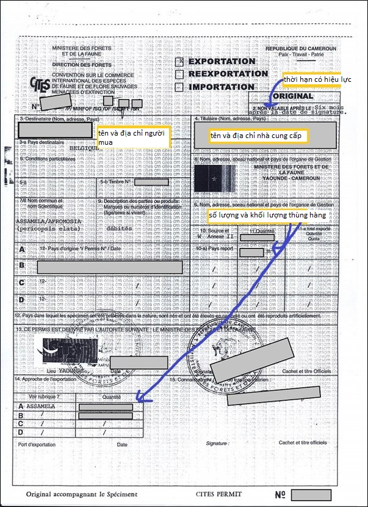
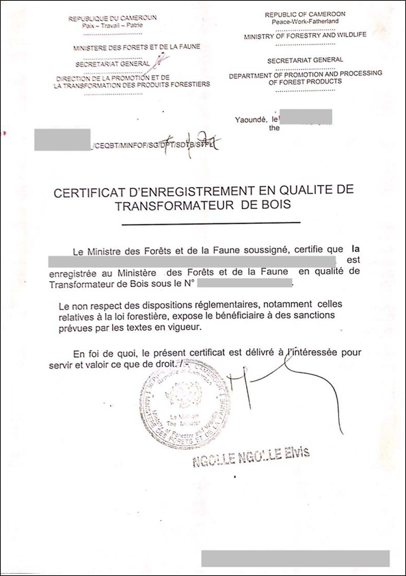

Implementing Timber Leglity Assurance Systems
A guide to comply with timber legality requirements in Cameroon and to support due diligence
Cameroon’s Timber legality requirements
Cameroon has signed a Voluntary Partnership Agreement with the European Union, and the definition of legality and the tools used to ensure the legality of forestry entities are set out in its Annex II. This includes eight legality matrices covering different sources of timber from permanent forest domains, non-permanent forest domains or timber processing units. By being aware of legal requirements in Cameroon highlighted below, law enforcement agencies and importers can implement control measures to promote timber legally harvested, transported and traded. Importers and verification agencies can refer to or use this definition in implementing due diligence.
Suggestions for developing and implementing due diligence for importers
Due diligence and complexity

Developing due diligence systems
Implementing due diligence
The following documents are selected in accordance with Cameroon’s legal definition and/or legal requirements in different stages of the supply chain.
Professional Forest Operator Accreditation
Ensure the document has been signed and stamped by the Prime Minister or the Minister of Forestry and Wildlife (with the authorization of the Prime Minister). Also check that the document has a file number and an official stamp of the President of the Republic.
Annual Harvesting Permit

Ensure the permit has a valid date and is signed by the Minister of Forestry and Wildlife. Also check that shipments align with timber volumes and species permitted by law.
Decree granting a forest concession (for areas managed by the Forest Management Unit [FMU])

Ensure the decree has been signed and stamped by the Prime Minister, check that the name of the operator specified in the decree is the concession holder and ensure a valid concession contract is attached.
Partnership Contract
Ensure the contract has a valid date, has been signed and stamped by the municipality representative, and includes a letter of approval signed and stamped by the Ministry of Forestry and Wildlife.
Forest Management Plan Approval Order
Ensure the document has been signed and stamped by the Minister of Forestry and Wildlife and check that the timber originates from the location specified in the order.
Certificate of Approval for the Environmental Impact Study (for areas managed by the FMU)
Check when the study was undertaken, ensure the certificate has been signed and stamped by the Minister of Environment, Nature Protection and Sustainable Development, and review any planned mitigation activities.
Records of offenses published by ministers responsible for labor, forestry and the environment
Check that the holder of forest rights is not included in the list of companies that have committed offenses.
AReports on social projects
Companies are obliged to provide reports on the implementation of social projects.
Minutes of meetings with local communities
The minutes of information meetings with local communities to discuss forest rights should be signed by the local administration or Prefect.
Certificate of Debt Clearance
Ensure a Certificate of Debt Clearance is authentic by entering its reference number into the website of the Directorate General of Taxes (go to https://mesure.dgi.cm:8077/ and click on the tab ‘Rechercher ANR’). If the certificate appears it is authentic.
Secure waybill for transporting logs and cut timber by road
Ensure the document has been stamped by the Ministry of Forestry and Wildlife, check when it was issued, and confirm that the origin, volume and species declared are consistent with the actual cargo. If logs and cut timber have been transported via rail look for a special declaration stamped by the company manager.
Certificate of Origin
Check the products and volumes specified are consistent with the actual shipment and ensure the certificate has been signed by the Ministry of Forestry and Wildlife.
Package specification for export
Check when the specification was issued and ensure the declared goods are consistent with the cargo being exported.
Export Registration

Check the document has been signed and stamped by the Ministry of Forestry and Wildlife and has a valid date. Also ensure the shipment and document specifications are consistent.
Loading Certificate
Ensure the document has been signed and stamped by customs authorities and has a valid date.
Receipt of payment for export taxes
Ensure the document has a valid date and has been signed and stamped by a customs collector in the town where the payment was made. To verify the authenticity of the document it may be necessary to compare the amounts of money declared on the customs declaration form and customs duty receipt.
Records of offenses published by ministers in charge of labor, forestry and the environment
Check that the export company is not included in the list of companies that have committed offenses.
CITES Permit
CITES permits are issued by the National CITES Management Authority of the Ministry of Forestry and Wildlife. Check the signature and seal of the CITES Management Authority, the name of the applicant / applicant's signature for the export permit, the name of the port of export.
Certificate of Registration
Check that the document has a valid date and has been signed and stamped by the Director for the Promotion and Transformation of Forest Products. Also ensure that details included in the certificate are consistent with processing activities.
Records of offenses published by ministers in charge of labor, forestry and the environment
Check that the processing company is not included in the list of companies that have committed offenses.
Certificate of Approval for Environmental Impact Study (for processing facility)
Check when the study was undertaken, ensure the certificate has been signed and stamped by the Minister of Environment, and review any planned and/or implemented mitigation activities.
Certificate of Compliance with Labor Standards
Certificates are granted following inspections of harvesting sites and processing sites by labor inspectors and recovery officers.